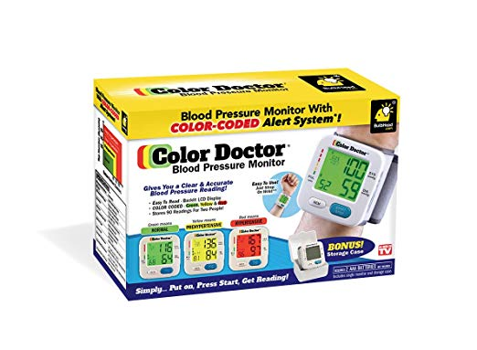
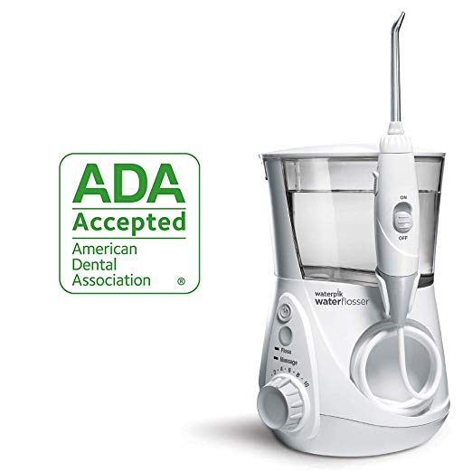
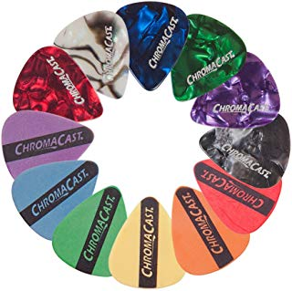
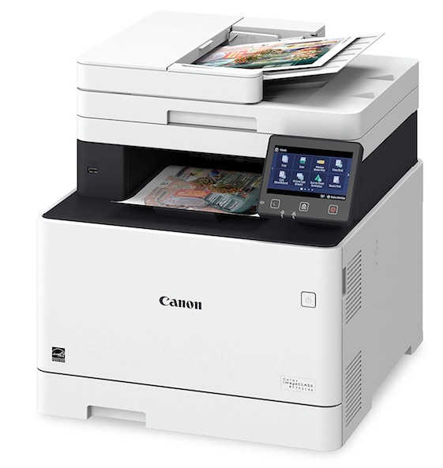
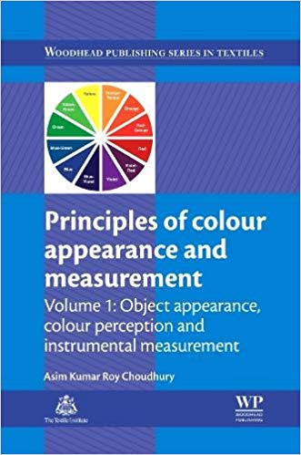
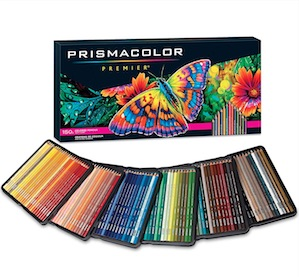
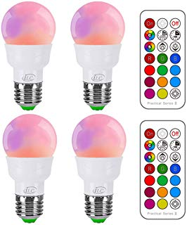
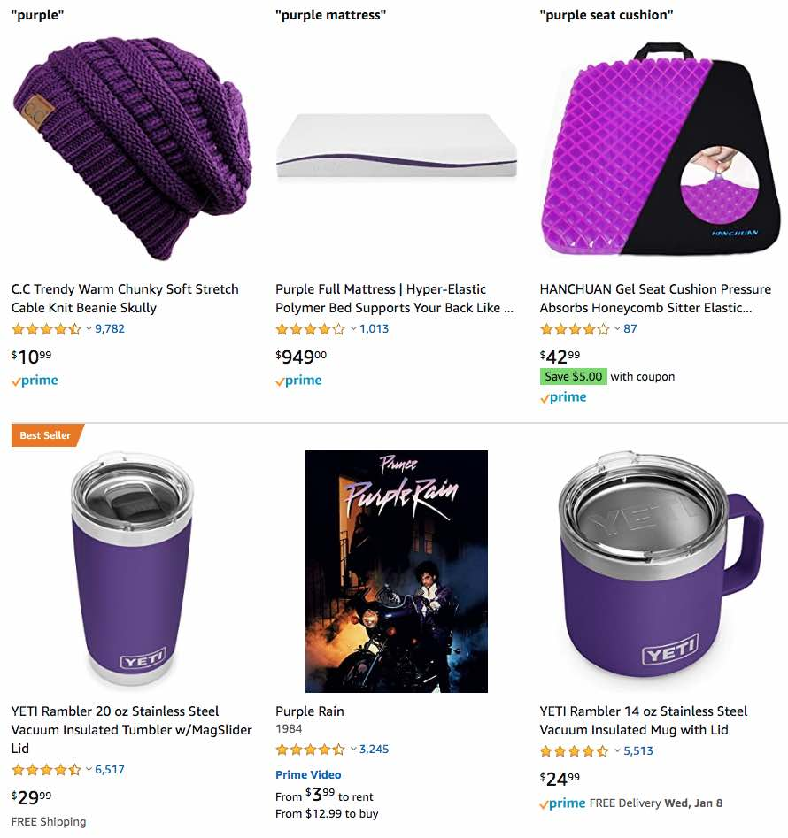

Please consider buying the following products from the links below to support ColorPick! A small portion of the sale will go to support continued development of ColorPick.
Color Doctor
The color doctor is a tool that allows you to see if you or a loved one has hypertension. 
Waterpik
Blast all the things from between your teeth - just add water (distilled water may be less abrasive in some cases). The adjustable intensity is essential! 
Pick
Are you digging things up? Or maybe just need to work in small spaces? There are various size picks available that may help. Various colors to choose from! 
Color Laser Printer
Are you tired of refilling ink? Are you sick of cleaning the print heads? Look no further! Laser is the answer for great print quality. 
Color by most expensive
The best search term on Amazon... check out these results! Buy today. 
Prismacolor
Soft, thick cores are perfect for shading and shadows. Did you know they make markers too? 
Color Changing LED Bulbs
Way too cool, you can change your mood lighting with the push of a button - some models even support custom color mixes or are phone controlled. Must have item. 
The color Purple
You can search Amazon for whatever color you want! You know what color supports ColorPick the most when you search and buy? Why it's Purple of course, go get yourself a mattress! 
Other Items
You may also search Amazon for other items using the search box below. Purchasing the items will help support ColorPick!
Thank You!